CODING AGENTS AS PIXEL WORLD MODELS
traex/GPT-6.1-Sol · 0057
点击播放 · 原生 RGB 像素
逐轮保存的候选
回放视频、检查图与代码变化。
每份候选均可单独播放。实际图片检查记录在下方工具轨迹中。
候选 01播放与检查图
点击播放 · 原生 RGB 像素

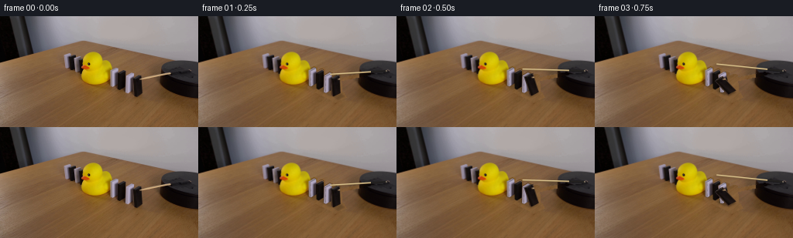
展开代码变化
--- 上一保存版本
+++ 本次保存版本
@@ -0,0 +1,191 @@
+from pathlib import Path
+import numpy as np
+import cv2
+from PIL import Image, ImageDraw
+from scipy.sparse import lil_matrix
+from scipy.sparse.linalg import spsolve
+import artifact_io
+
+ROOT=Path(__file__).resolve().parent
+S=4; W=256; H=144
+src=np.array(Image.open(ROOT/'first_frame.png').convert('RGB'))
+hi=cv2.resize(src,(W*S,H*S),interpolation=cv2.INTER_CUBIC)
+
+# Rectangular rigid tiles: bottom near corner, across-width, thickness, height.
+blocks=[
+ (np.array([145.5,91.1]),np.array([7.3,-4.3]),np.array([2.7,1.1]),19.9,False),
+ (np.array([155.4,94.9]),np.array([7.1,-4.1]),np.array([2.7,1.2]),21.5,True),
+ (np.array([164.8,99.6]),np.array([8.2,-4.5]),np.array([2.8,1.1]),21.4,False),
+ (np.array([174.6,104.0]),np.array([9.0,-4.6]),np.array([2.7,1.2]),22.6,True),
+]
+
+def verts(i,ang):
+ p,d,th,h,black=blocks[i]
+ hinge=p-th
+ t=np.linalg.norm(th); direction=th/t
+ vertical=np.array([-.036,-1.0])
+ # Parallel projection of a hinge rotating on the table.
+ def point(s,z):
+ return hinge + direction*(s*np.cos(ang)-.92*z*np.sin(ang)) + vertical*(s*np.sin(ang)+z*np.cos(ang))
+ a=point(t,0);b=a+d;c=point(0,0)+d;dd=point(0,0)
+ at=point(t,h);bt=at+d;ct=point(0,h)+d;dt=point(0,h)
+ return np.array([a,b,c,dd,at,bt,ct,dt])
+
+# Remove just the moving props. The table's local high frequency wood grain
+# is continued from a nearby parallel patch, with a harmonic boundary match.
+mask=np.zeros((H,W),np.uint8)
+for i in range(4):
+ v=verts(i,0)
+ hull=cv2.convexHull(v.astype(np.float32)).reshape(-1,2)
+ cv2.fillConvexPoly(mask,np.round(hull).astype(np.int32),255)
+mask=cv2.dilate(mask,np.ones((3,3),np.uint8))
+cv2.fillPoly(mask,[np.array([(142,88),(153,85),(188,99),(191,105),(177,111),(141,94)])],255)
+# Guard the duck silhouette: do not paint over the yellow rubber.
+yellow=(src[:,:,0]>130)&(src[:,:,1]>115)&(src[:,:,2]<70)
+mask[yellow]=0
+# Include the stationary rod and its optical edge; stays clear of the pin.
+cv2.line(mask,(181,82),(220,74),255,3)
+cv2.line(mask,(219,74),(243,71),255,2)
+# Texture borrowing uses the table below the setup, and black surface on the disk.
+candidate=src.astype(float).copy()
+for y,x in zip(*np.nonzero(mask)):
+ if x>=208 and y<90:
+ # only the narrow strip of old rod on the round black plate
+ yy=min(y+7,90); xx=min(x+1,255)
+ candidate[y,x]=src[yy,xx]
+ else:
+ yy=min(y+32,143); xx=max(x-20,0)
+ candidate[y,x]=src[yy,xx]
+# Solve for a smooth colour offset that matches the image at every patch edge.
+coords=list(zip(*np.nonzero(mask))); lookup={p:i for i,p in enumerate(coords)}
+A=lil_matrix((len(coords),len(coords))); rhs=np.zeros((len(coords),3))
+for k,(y,x) in enumerate(coords):
+ A[k,k]=4
+ for dy,dx in [(0,1),(0,-1),(1,0),(-1,0)]:
+ yy,xx=y+dy,x+dx
+ if not(0<=yy<H and 0<=xx<W):continue
+ if (yy,xx) in lookup:A[k,lookup[(yy,xx)]]=-1
+ else:rhs[k]+=src[yy,xx].astype(float)-candidate[yy,xx]
+correction=spsolve(A.tocsr(),rhs)
+clean=src.astype(float).copy()
+for k,(y,x) in enumerate(coords):clean[y,x]=np.clip(candidate[y,x]+correction[k],0,255)
+clean=np.uint8(clean)
+cv2.imwrite(str(ROOT/'.tmp/clean.png'),cv2.cvtColor(clean,cv2.COLOR_RGB2BGR))
+base=cv2.resize(clean,(W*S,H*S),interpolation=cv2.INTER_CUBIC).astype(float)
+
+# Original face photographs become surface albedo maps of the three tile faces.
+face_ids=[[0,1,5,4],[3,0,4,7],[7,4,5,6]]
+textures=[]
+for i in range(4):
+ vv=verts(i,0)*S
+ maps=[]
+ for inds in face_ids:
+ q=vv[inds].astype(np.float32)
+ out=np.array([[0,119],[47,119],[47,0],[0,0]],np.float32)
+ transform=cv2.getPerspectiveTransform(q,out)
+ tex=cv2.warpPerspective(hi,transform,(48,120),flags=cv2.INTER_CUBIC)
+ maps.append(tex.astype(float))
+ textures.append(maps)
+
+# Duck is the physical interruption of the domino chain; fallen tops behind it
+# are occluded by the existing rubber body, not by newly invented geometry.
+duckmask=np.zeros((H,W),np.uint8)
+cv2.fillPoly(duckmask,[np.array([(105,69),(105,63),(107,54),(112,48),(118,46),(125,48),(130,53),(132,61),(136,58),(141,61),(144,69),(142,79),(139,85),(132,89),(118,90),(109,87),(105,80)])],255)
+duckmask=cv2.GaussianBlur(duckmask,(3,3),.5)/255.0
+duckmask=cv2.resize(duckmask,(W*S,H*S),interpolation=cv2.INTER_LINEAR)[...,None]
+
+
+def poly_mask(points,blur=0):
+ m=np.zeros((H*S,W*S),np.uint8)
+ cv2.fillConvexPoly(m,np.round(points*S).astype(np.int32),255,lineType=cv2.LINE_AA)
+ if blur:m=cv2.GaussianBlur(m,(0,0),blur*S)
+ return m.astype(float)/255
+
+def draw_face(canvas,quad,tex,gain=1):
+ q=(quad*S).astype(np.float32)
+ inp=np.array([[0,119],[47,119],[47,0],[0,0]],np.float32)
+ mat=cv2.getPerspectiveTransform(inp,q)
+ warped=cv2.warpPerspective(tex*gain,mat,(W*S,H*S),flags=cv2.INTER_LINEAR)
+ alpha=poly_mask(quad)[...,None]
+ return canvas*(1-alpha)+warped*alpha
+
+# Radial stick in a horizontal plane with perspective foreshortening.
+# At angle zero it reproduces the exact starting location. Viewed from above
+# the motion is clockwise: the leftmost end sweeps to the far side of the disk.
+pivot=np.array([243.0,71.1]);tip0=np.array([180.4,81.9])
+M=np.array([[1.0,.22],[.13,.43]])
+radial=np.linalg.solve(M,tip0-pivot)
+
+def rod_end(t):
+ phi=np.deg2rad(39.0*t)
+ rot=np.array([[np.cos(phi),-np.sin(phi)],[np.sin(phi),np.cos(phi)]])
+ return pivot+M@rot@radial
+
+def draw_rod(canvas,t):
+ end=rod_end(t); direction=end-pivot; L=np.linalg.norm(direction)
+ # subtle shaft shadow on the table and the platform
+ sh=np.zeros((H*S,W*S),np.uint8)
+ cv2.line(sh,tuple(np.round((pivot+[0,1.0])*S).astype(int)),tuple(np.round((end+[.3,2])*S).astype(int)),255,3,lineType=cv2.LINE_AA)
+ sh=cv2.GaussianBlur(sh,(0,0),1.2*S).astype(float)/255
+ canvas*=1-.17*sh[...,None]
+ # Wooden dowel with a lit upper edge and brown lower edge.
+ im=np.uint8(np.clip(canvas,0,255));aa=tuple(np.round(pivot*S).astype(int));bb=tuple(np.round(end*S).astype(int))
+ cv2.line(im,aa,bb,(138,113,73),6,lineType=cv2.LINE_AA)
+ cv2.line(im,(aa[0],aa[1]-1),(bb[0],bb[1]-1),(200,175,125),4,lineType=cv2.LINE_AA)
+ cv2.line(im,(aa[0],aa[1]-2),(bb[0],bb[1]-2),(222,198,145),2,lineType=cv2.LINE_AA)
+ # Black attachment at the base rotates with the stick.
+ u=direction/L;normal=np.array([-u[1],u[0]])
+ q=np.array([pivot+u*1-normal*1.2,pivot+u*20-normal*1.2,pivot+u*20+normal*1.2,pivot+u*1+normal*1.2])
+ a=poly_mask(q)[...,None]*.93
+ im=im*(1-a)+np.array([24,23,25])*a
+ cv2.ellipse(im,aa,(3,2),0,0,360,(119,111,101),-1,cv2.LINE_AA)
+ return im.astype(float)
+
+
+def tile_angle(i,t):
+ # A finite contact wave travels from the driven tile to the duck.
+ starts=[1.10,.85,.60,.30]
+ finals=[34,45,56,66]
+ elapsed=t-starts[i]
+ if elapsed<=0:return 0.0
+ dur=[.62,.60,.57,.55][i]
+ u=min(elapsed/dur,1)
+ # Initial gravity-driven fall accelerates, then settles on the next prop.
+ ease=u*u*(3-2*u)
+ a=finals[i]*ease
+ if elapsed>dur:
+ v=elapsed-dur
+ a+=1.5*np.sin(v*19)*np.exp(-v*7)
+ return np.deg2rad(a)
+
+frames=[src]
+for frame in range(1,20):
+ t=frame/4
+ angles=[tile_angle(i,t) for i in range(4)]
+ canvas=base.copy()
+ # Ground shadows follow the rotating rigid corners.
+ for i,a in enumerate(angles):
+ v=verts(i,a)
+ p,d,th,h,black=blocks[i]
+ ground=v.copy()
+ # Project each corner's elevated distance down to the table.
+ levels=np.array([np.linalg.norm(th)*np.sin(a)]*2+[0]*2+[np.linalg.norm(th)*np.sin(a)+h*np.cos(a)]*2+[h*np.cos(a)]*2)
+ ground+=levels[:,None]*np.array([.30,1.20])
+ hull=cv2.convexHull(ground.astype(np.float32)).reshape(-1,2)
+ shadow=poly_mask(hull,.95)
+ canvas*=1-.17*shadow[...,None]
+ footprint=cv2.convexHull(v[:4].astype(np.float32)).reshape(-1,2)
+ canvas*=1-.23*poly_mask(footprint,.55)[...,None]
+ for i,a in enumerate(angles):
+ v=verts(i,a)
+ for j,inds in enumerate(face_ids):
+ gain=1+(np.sin(a)*(.16 if blocks[i][4] else .055)) if j==0 else 1
+ canvas=draw_face(canvas,v[inds],textures[i][j],gain)
+ # Preserve the duck's familiar body and facial details exactly.
+ canvas=canvas*(1-duckmask)+hi.astype(float)*duckmask
+ canvas=draw_rod(canvas,t)
+ # Match the lens softness of the photo at the subpixel silhouette edges.
+ out=cv2.resize(np.clip(canvas,0,255).astype(np.uint8),(W,H),interpolation=cv2.INTER_AREA)
+ frames.append(out)
+frames=np.stack(frames).astype(np.uint8)
+artifact_io.save(frames,ROOT)
候选 02播放与检查图
点击播放 · 原生 RGB 像素
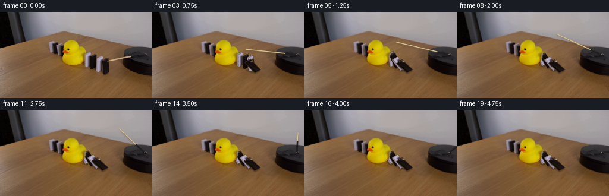
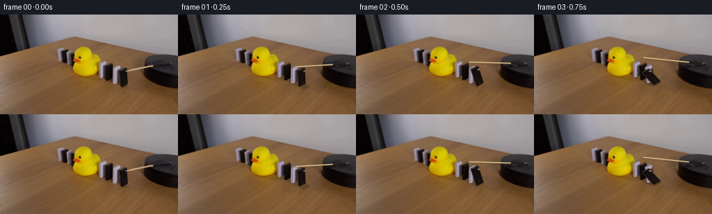
展开代码变化
--- 上一保存版本
+++ 本次保存版本
@@ -38,7 +38,7 @@
v=verts(i,0)
hull=cv2.convexHull(v.astype(np.float32)).reshape(-1,2)
cv2.fillConvexPoly(mask,np.round(hull).astype(np.int32),255)
-mask=cv2.dilate(mask,np.ones((3,3),np.uint8))
+mask=cv2.dilate(mask,np.ones((5,5),np.uint8))
cv2.fillPoly(mask,[np.array([(142,88),(153,85),(188,99),(191,105),(177,111),(141,94)])],255)
# Guard the duck silhouette: do not paint over the yellow rubber.
yellow=(src[:,:,0]>130)&(src[:,:,1]>115)&(src[:,:,2]<70)
@@ -48,7 +48,8 @@
cv2.line(mask,(219,74),(243,71),255,2)
# Texture borrowing uses the table below the setup, and black surface on the disk.
candidate=src.astype(float).copy()
-for y,x in zip(*np.nonzero(mask)):
+for y in range(H):
+ for x in range(W):
if x>=208 and y<90:
# only the narrow strip of old rod on the round black plate
yy=min(y+7,90); xx=min(x+1,255)
候选 03播放与检查图
点击播放 · 原生 RGB 像素

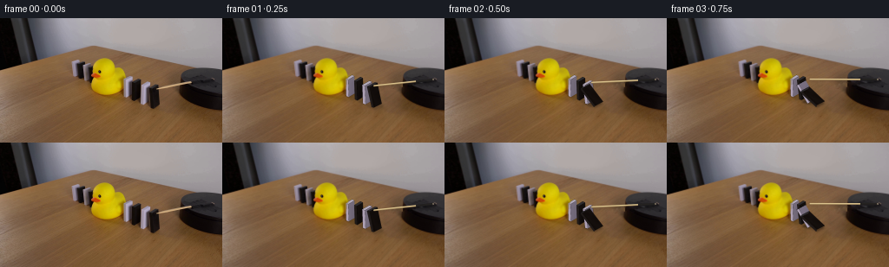
展开代码变化
--- 上一保存版本
+++ 本次保存版本
@@ -85,7 +85,20 @@
out=np.array([[0,119],[47,119],[47,0],[0,0]],np.float32)
transform=cv2.getPerspectiveTransform(q,out)
tex=cv2.warpPerspective(hi,transform,(48,120),flags=cv2.INTER_CUBIC)
- maps.append(tex.astype(float))
+ # Suppress edge contamination from neighbouring tiles, table, and the dowel.
+ tex=tex.astype(float)
+ if blocks[i][4]:
+ levels=([16,11,9],[31,25,23],[45,42,44])
+ else:
+ levels=([113,104,120],[174,161,181],[178,169,185])
+ level=np.array(levels[len(maps)],float)
+ Y,X=np.mgrid[0:120,0:48]
+ detail=cv2.GaussianBlur(tex,(0,0),1.2)
+ detail-=np.median(detail[25:95,12:36],axis=(0,1))
+ detail=np.clip(detail,-3,3)*.5
+ grad=(1.5*(1-Y/119)+.6*(1-X/47))[...,None]
+ tex=np.clip(level+detail+grad,0,255)
+ maps.append(tex)
textures.append(maps)
# Duck is the physical interruption of the domino chain; fallen tops behind it
@@ -118,7 +131,7 @@
radial=np.linalg.solve(M,tip0-pivot)
def rod_end(t):
- phi=np.deg2rad(39.0*t)
+ phi=np.deg2rad(22.0*t)
rot=np.array([[np.cos(phi),-np.sin(phi)],[np.sin(phi),np.cos(phi)]])
return pivot+M@rot@radial
@@ -145,11 +158,11 @@
def tile_angle(i,t):
# A finite contact wave travels from the driven tile to the duck.
- starts=[1.10,.85,.60,.30]
+ starts=[.85,.61,.38,.08]
finals=[34,45,56,66]
elapsed=t-starts[i]
if elapsed<=0:return 0.0
- dur=[.62,.60,.57,.55][i]
+ dur=[.65,.60,.57,.60][i]
u=min(elapsed/dur,1)
# Initial gravity-driven fall accelerates, then settles on the next prop.
ease=u*u*(3-2*u)
候选 04播放与检查图
点击播放 · 原生 RGB 像素
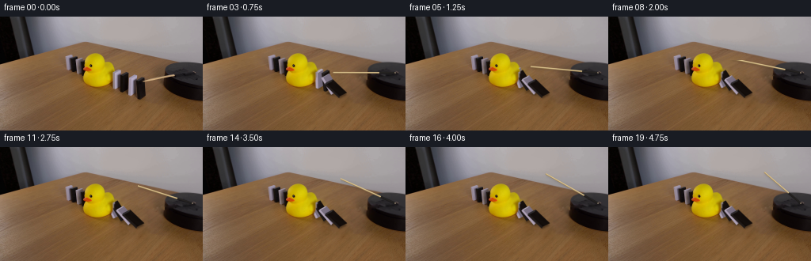
展开代码变化
--- 上一保存版本
+++ 本次保存版本
@@ -119,8 +119,8 @@
q=(quad*S).astype(np.float32)
inp=np.array([[0,119],[47,119],[47,0],[0,0]],np.float32)
mat=cv2.getPerspectiveTransform(inp,q)
- warped=cv2.warpPerspective(tex*gain,mat,(W*S,H*S),flags=cv2.INTER_LINEAR)
- alpha=poly_mask(quad)[...,None]
+ warped=cv2.warpPerspective(tex*gain,mat,(W*S,H*S),flags=cv2.INTER_LINEAR,borderMode=cv2.BORDER_REPLICATE)
+ alpha=poly_mask(quad,.15)[...,None]
return canvas*(1-alpha)+warped*alpha
# Radial stick in a horizontal plane with perspective foreshortening.
@@ -199,7 +199,13 @@
canvas=canvas*(1-duckmask)+hi.astype(float)*duckmask
canvas=draw_rod(canvas,t)
# Match the lens softness of the photo at the subpixel silhouette edges.
+ canvas=cv2.GaussianBlur(canvas,(0,0),.65)
out=cv2.resize(np.clip(canvas,0,255).astype(np.uint8),(W,H),interpolation=cv2.INTER_AREA)
+ # Absolutely fixed original environment, outside the swept apparatus region.
+ region=np.zeros((H,W),np.uint8)
+ cv2.rectangle(region,(138,55),(195,115),255,-1)
+ cv2.rectangle(region,(174,31),(255,91),255,-1)
+ out[region==0]=src[region==0]
frames.append(out)
frames=np.stack(frames).astype(np.uint8)
artifact_io.save(frames,ROOT)
候选 05播放与检查图
点击播放 · 原生 RGB 像素

展开代码变化
--- 上一保存版本
+++ 本次保存版本
@@ -204,7 +204,7 @@
# Absolutely fixed original environment, outside the swept apparatus region.
region=np.zeros((H,W),np.uint8)
cv2.rectangle(region,(138,55),(195,115),255,-1)
- cv2.rectangle(region,(174,31),(255,91),255,-1)
+ cv2.rectangle(region,(145,25),(255,91),255,-1)
out[region==0]=src[region==0]
frames.append(out)
frames=np.stack(frames).astype(np.uint8)
候选 06播放与检查图
可观测工具轨迹
实际执行的命令与返回图片。
命令 1exit 0
/bin/bash -lc 'ls -la && cat prompt.txt && cat GENERATION_RULES.md'
命令 2exit 0
/bin/bash -lc "cat artifact_io.py && python - <<'PY'
from PIL import Image
im=Image.open('first_frame.png');print(im.size);im.resize((1024,576)).save('.tmp/up.png')
PY"命令 3exit 0
/bin/bash -lc "python - <<'PY'
from PIL import Image
im=Image.open('first_frame.png'); im.crop((138,60,188,107)).resize((500,470)).save('.tmp/dominos.png')
PY"命令 4exit 0
/bin/bash -lc "python - <<'PY'
from PIL import Image
im=Image.open('first_frame.png'); im.crop((170,54,256,112)).resize((688,464)).save('.tmp/stick.png')
PY"命令 5exit 0
/bin/bash -lc "python - <<'PY' import cv2,numpy as np print(cv2.__version__) PY"
命令 6exit 0
/bin/bash -lc "python - <<'PY'
from PIL import Image
im=Image.open('first_frame.png');im.resize((1536,864),Image.Resampling.NEAREST).save('.tmp/nearest.png')
PY"命令 7exit 0
/bin/bash -lc "python - <<'PY'
from PIL import Image,ImageDraw
im=Image.open('first_frame.png').resize((1024,576));d=ImageDraw.Draw(im)
for x in range(136,193,4):
d.line((x*4,60*4,x*4,110*4), fill=(200,110,100),width=1);d.text((x*4,60*4),str(x),fill='white')
for y in range(64,111,4):
d.line((136*4,y*4,193*4,y*4),fill=(200,110,100),width=1);d.text((193*4,y*4),str(y),fill='white')
im.crop((540,236,815,444)).resize((825,624)).save('.tmp/grid.png')
PY"命令 8exit 0
/bin/bash -lc "cat > generate.py <<'PY'
from pathlib import Path
import numpy as np
import cv2
from PIL import Image, ImageDraw
from scipy.sparse import lil_matrix
from scipy.sparse.linalg import spsolve
import artifact_io
ROOT=Path(__file__).resolve().parent
S=4; W=256; H=144
src=np.array(Image.open(ROOT/'first_frame.png').convert('RGB'))
hi=cv2.resize(src,(W*S,H*S),interpolation=cv2.INTER_CUBIC)
# Rectangular rigid tiles: bottom near corner, across-width, thickness, height.
blocks=[
(np.array([145.5,91.1]),np.array([7.3,-4.3]),np.array([2.7,1.1]),19.9,False),
(np.array([155.4,94.9]),np.array([7.1,-4.1]),np.array([2.7,1.2]),21.5,True),
(np.array([164.8,99.6]),np.array([8.2,-4.5]),np.array([2.8,1.1]),21.4,False),
(np.array([174.6,104.0]),np.array([9.0,-4.6]),np.array([2.7,1.2]),22.6,True),
]
def verts(i,ang):
p,d,th,h,black=blocks[i]
hinge=p-th
t=np.linalg.norm(th); direction=th/t
vertical=np.array([-.036,-1.0])
# Parallel projection of a hinge rotating on the table.
def point(s,z):
return hinge + direction*(s*np.cos(ang)-.92*z*np.sin(ang)) + vertical*(s*np.sin(ang)+z*np.cos(ang))
a=point(t,0);b=a+d;c=point(0,0)+d;dd=point(0,0)
at=point(t,h);bt=at+d;ct=point(0,h)+d;dt=point(0,h)
return np.array([a,b,c,dd,at,bt,ct,dt])
# Remove just the moving props. The table's local high frequency wood grain
# is continued from a nearby parallel patch, with a harmonic boundary match.
mask=np.zeros((H,W),np.uint8)
for i in range(4):
v=verts(i,0)
hull=cv2.convexHull(v.astype(np.float32)).reshape(-1,2)
cv2.fillConvexPoly(mask,np.round(hull).astype(np.int32),255)
mask=cv2.dilate(mask,np.ones((3,3),np.uint8))
cv2.fillPoly(mask,[np.array([(142,88),(153,85),(188,99),(191,105),(177,111),(141,94)])],255)
# Guard the duck silhouette: do not paint over the yellow rubber.
yellow=(src[:,:,0]>130)&(src[:,:,1]>115)&(src[:,:,2]<70)
mask[yellow]=0
# Include the stationary rod and its optical edge; stays clear of the pin.
cv2.line(mask,(181,82),(220,74),255,3)
cv2.line(mask,(219,74),(243,71),255,2)
# Texture borrowing uses the table below the setup, and black surface on the disk.
candidate=src.astype(float).copy()
for y,x in zip(*np.nonzero(mask)):
if x>=208 and y<90:
# only the narrow strip of old rod on the round black plate
yy=min(y+7,90); xx=min(x+1,255)
candidate[y,x]=src[yy,xx]
else:
yy=min(y+32,143); xx=max(x-20,0)
candidate[y,x]=src[yy,xx]
# Solve for a smooth colour offset that matches the image at every patch edge.
coords=list(zip(*np.nonzero(mask))); lookup={p:i for i,p in enumerate(coords)}
A=lil_matrix((len(coords),len(coords))); rhs=np.zeros((len(coords),3))
for k,(y,x) in enumerate(coords):
A[k,k]=4
for dy,dx in [(0,1),(0,-1),(1,0),(-1,0)]:
yy,xx=y+dy,x+dx
if not(0<=yy<H and 0<=xx<W):continue
if (yy,xx) in lookup:A[k,lookup[(yy,xx)]]=-1
else:rhs[k]+=src[yy,xx].astype(float)-candidate[yy,xx]
correction=spsolve(A.tocsr(),rhs)
clean=src.astype(float).copy()
for k,(y,x) in enumerate(coords):clean[y,x]=np.clip(candidate[y,x]+correction[k],0,255)
clean=np.uint8(clean)
cv2.imwrite(str(ROOT/'.tmp/clean.png'),cv2.cvtColor(clean,cv2.COLOR_RGB2BGR))
base=cv2.resize(clean,(W*S,H*S),interpolation=cv2.INTER_CUBIC).astype(float)
# Original face photographs become surface albedo maps of the three tile faces.
face_ids=[[0,1,5,4],[3,0,4,7],[7,4,5,6]]
textures=[]
for i in range(4):
vv=verts(i,0)*S
maps=[]
for inds in face_ids:
q=vv[inds].astype(np.float32)
out=np.array([[0,119],[47,119],[47,0],[0,0]],np.float32)
transform=cv2.getPerspectiveTransform(q,out)
tex=cv2.warpPerspective(hi,transform,(48,120),flags=cv2.INTER_CUBIC)
maps.append(tex.astype(float))
textures.append(maps)
# Duck is the physical interruption of the domino chain; fallen tops behind it
# are occluded by the existing rubber body, not by newly invented geometry.
duckmask=np.zeros((H,W),np.uint8)
cv2.fillPoly(duckmask,[np.array([(105,69),(105,63),(107,54),(112,48),(118,46),(125,48),(130,53),(132,61),(136,58),(141,61),(144,69),(142,79),(139,85),(132,89),(118,90),(109,87),(105,80)])],255)
duckmask=cv2.GaussianBlur(duckmask,(3,3),.5)/255.0
duckmask=cv2.resize(duckmask,(W*S,H*S),interpolation=cv2.INTER_LINEAR)[...,None]
def poly_mask(points,blur=0):
m=np.zeros((H*S,W*S),np.uint8)
cv2.fillConvexPoly(m,np.round(points*S).astype(np.int32),255,lineType=cv2.LINE_AA)
if blur:m=cv2.GaussianBlur(m,(0,0),blur*S)
return m.astype(float)/255
def draw_face(canvas,quad,tex,gain=1):
q=(quad*S).astype(np.float32)
inp=np.array([[0,119],[47,119],[47,0],[0,0]],np.float32)
mat=cv2.getPerspectiveTransform(inp,q)
warped=cv2.warpPerspective(tex*gain,mat,(W*S,H*S),flags=cv2.INTER_LINEAR)
alpha=poly_mask(quad)[...,None]
return canvas*(1-alpha)+warped*alpha
# Radial stick in a horizontal plane with perspective foreshortening.
# At angle zero it reproduces the exact starting location. Viewed from above
# the motion is clockwise: the leftmost end sweeps to the far side of the disk.
pivot=np.array([243.0,71.1]);tip0=np.array([180.4,81.9])
M=np.array([[1.0,.22],[.13,.43]])
radial=np.linalg.solve(M,tip0-pivot)
def rod_end(t):
phi=np.deg2rad(39.0*t)
rot=np.array([[np.cos(phi),-np.sin(phi)],[np.sin(phi),np.cos(phi)]])
return pivot+M@rot@radial
def draw_rod(canvas,t):
end=rod_end(t); direction=end-pivot; L=np.linalg.norm(direction)
# subtle shaft shadow on the table and the platform
sh=np.zeros((H*S,W*S),np.uint8)
cv2.line(sh,tuple(np.round((pivot+[0,1.0])*S).astype(int)),tuple(np.round((end+[.3,2])*S).astype(int)),255,3,lineType=cv2.LINE_AA)
sh=cv2.GaussianBlur(sh,(0,0),1.2*S).astype(float)/255
canvas*=1-.17*sh[...,None]
# Wooden dowel with a lit upper edge and brown lower edge.
im=np.uint8(np.clip(canvas,0,255));aa=tuple(np.round(pivot*S).astype(int));bb=tuple(np.round(end*S).astype(int))
cv2.line(im,aa,bb,(138,113,73),6,lineType=cv2.LINE_AA)
cv2.line(im,(aa[0],aa[1]-1),(bb[0],bb[1]-1),(200,175,125),4,lineType=cv2.LINE_AA)
cv2.line(im,(aa[0],aa[1]-2),(bb[0],bb[1]-2),(222,198,145),2,lineType=cv2.LINE_AA)
# Black attachment at the base rotates with the stick.
u=direction/L;normal=np.array([-u[1],u[0]])
q=np.array([pivot+u*1-normal*1.2,pivot+u*20-normal*1.2,pivot+u*20+normal*1.2,pivot+u*1+normal*1.2])
a=poly_mask(q)[...,None]*.93
im=im*(1-a)+np.array([24,23,25])*a
cv2.ellipse(im,aa,(3,2),0,0,360,(119,111,101),-1,cv2.LINE_AA)
return im.astype(float)
def tile_angle(i,t):
# A finite contact wave travels from the driven tile to the duck.
starts=[1.10,.85,.60,.30]
finals=[34,45,56,66]
elapsed=t-starts[i]
if elapsed<=0:return 0.0
dur=[.62,.60,.57,.55][i]
u=min(elapsed/dur,1)
# Initial gravity-driven fall accelerates, then settles on the next prop.
ease=u*u*(3-2*u)
a=finals[i]*ease
if elapsed>dur:
v=elapsed-dur
a+=1.5*np.sin(v*19)*np.exp(-v*7)
return np.deg2rad(a)
frames=[src]
for frame in range(1,20):
t=frame/4
angles=[tile_angle(i,t) for i in range(4)]
canvas=base.copy()
# Ground shadows follow the rotating rigid corners.
for i,a in enumerate(angles):
v=verts(i,a)
p,d,th,h,black=blocks[i]
ground=v.copy()
# Project each corner's elevated distance down to the table.
levels=np.array([np.linalg.norm(th)*np.sin(a)]*2+[0]*2+[np.linalg.norm(th)*np.sin(a)+h*np.cos(a)]*2+[h*np.cos(a)]*2)
ground+=levels[:,None]*np.array([.30,1.20])
hull=cv2.convexHull(ground.astype(np.float32)).reshape(-1,2)
shadow=poly_mask(hull,.95)
canvas*=1-.17*shadow[...,None]
footprint=cv2.convexHull(v[:4].astype(np.float32)).reshape(-1,2)
canvas*=1-.23*poly_mask(footprint,.55)[...,None]
for i,a in enumerate(angles):
v=verts(i,a)
for j,inds in enumerate(face_ids):
gain=1+(np.sin(a)*(.16 if blocks[i][4] else .055)) if j==0 else 1
canvas=draw_face(canvas,v[inds],textures[i][j],gain)
# Preserve the duck's familiar body and facial details exactly.
canvas=canvas*(1-duckmask)+hi.astype(float)*duckmask
canvas=draw_rod(canvas,t)
# Match the lens softness of the photo at the subpixel silhouette edges.
out=cv2.resize(np.clip(canvas,0,255).astype(np.uint8),(W,H),interpolation=cv2.INTER_AREA)
frames.append(out)
frames=np.stack(frames).astype(np.uint8)
artifact_io.save(frames,ROOT)
PY
python generate.py"命令 9exit 0
/bin/bash -lc "python - <<'PY'
from PIL import Image
for n in [1,3,5,8,19]:
im=Image.open('frames/%02d.png'%n);im.resize((1024,576)).save('.tmp/f%d.png'%n)
PY"命令 10exit 0
/bin/bash -lc "python - <<'PY'
import cv2, numpy as np
s=cv2.cvtColor(cv2.imread('first_frame.png'),cv2.COLOR_BGR2RGB)
for y,x in [(80,148),(80,145),(82,150),(81,156),(78,160),(93,169),(91,165),(88,178),(87,175),(82,177)]:print(x,y,s[y,x])
PY"命令 11exit 0
/bin/bash -lc "python - <<'PY'
p='generate.py'
s=open(p).read().replace('np.ones((3,3),np.uint8)','np.ones((5,5),np.uint8)',1)
s=s.replace('for y,x in zip(*np.nonzero(mask)):\\n if x>=208 and y<90:', 'for y in range(H):\\n for x in range(W):\\n if x>=208 and y<90:')
open(p,'w').write(s)
PY
python generate.py"命令 12exit 0
/bin/bash -lc "python - <<'PY'
import numpy as np,cv2
from PIL import Image
src=np.array(Image.open('first_frame.png')); hi=cv2.resize(src,(1024,576),interpolation=cv2.INTER_CUBIC)
blocks=[([145.5,91.1],[7.3,-4.3],[2.7,1.1],19.9),([155.4,94.9],[7.1,-4.1],[2.7,1.2],21.5),([164.8,99.6],[8.2,-4.5],[2.8,1.1],21.4),([174.6,104.0],[9,-4.6],[2.7,1.2],22.6)]
for p,d,th,h in blocks:
p=np.array(p);d=np.array(d);th=np.array(th);v=np.array([p,p+d,p-th+d,p-th,p+[-.036*h,-h],p+d+[-.036*h,-h],p-th+d+[-.036*h,-h],p-th+[-.036*h,-h]])
print('BLOCK')
for inds in [[0,1,5,4],[3,0,4,7],[7,4,5,6]]:
q=(v[inds]*4).astype(np.float32);out=np.array([[0,119],[47,119],[47,0],[0,0]],np.float32)
tex=cv2.warpPerspective(hi,cv2.getPerspectiveTransform(q,out),(48,120))
print(np.median(tex[20:100,12:36],axis=(0,1)))
PY"命令 13exit 0
/bin/bash -lc "python - <<'PY'
p='generate.py';s=open(p).read()
s=s.replace('maps.append(tex.astype(float))','''# Suppress edge contamination from neighbouring tiles, table, and the dowel.
tex=tex.astype(float)
if blocks[i][4]:
levels=([16,11,9],[31,25,23],[45,42,44])
else:
levels=([113,104,120],[174,161,181],[178,169,185])
level=np.array(levels[len(maps)],float)
Y,X=np.mgrid[0:120,0:48]
detail=cv2.GaussianBlur(tex,(0,0),1.2)
detail-=np.median(detail[25:95,12:36],axis=(0,1))
detail=np.clip(detail,-3,3)*.5
grad=(1.5*(1-Y/119)+.6*(1-X/47))[...,None]
tex=np.clip(level+detail+grad,0,255)
maps.append(tex)''')
s=s.replace('39.0*t','22.0*t').replace('starts=[1.10,.85,.60,.30]','starts=[.85,.61,.38,.08]')
s=s.replace('dur=[.62,.60,.57,.55][i]','dur=[.65,.60,.57,.60][i]')
open(p,'w').write(s)
PY
python generate.py"命令 14exit 0
/bin/bash -lc "python - <<'PY'
p='generate.py';s=open(p).read().replace('flags=cv2.INTER_LINEAR)\\n alpha=poly_mask(quad)','flags=cv2.INTER_LINEAR,borderMode=cv2.BORDER_REPLICATE)\\n alpha=poly_mask(quad,.15)')
s=s.replace('out=cv2.resize(np.clip(canvas,0,255).astype(np.uint8),(W,H),interpolation=cv2.INTER_AREA)','''canvas=cv2.GaussianBlur(canvas,(0,0),.65)
out=cv2.resize(np.clip(canvas,0,255).astype(np.uint8),(W,H),interpolation=cv2.INTER_AREA)
# Absolutely fixed original environment, outside the swept apparatus region.
region=np.zeros((H,W),np.uint8)
cv2.rectangle(region,(138,55),(195,115),255,-1)
cv2.rectangle(region,(174,31),(255,91),255,-1)
out[region==0]=src[region==0]''')
open(p,'w').write(s)
PY
python generate.py"命令 15exit 0
/bin/bash -lc "sed -i 's/(174,31)/(145,25)/' generate.py
python generate.py && python - <<'PY'
import numpy as np
from PIL import Image
p=np.load('pixels.npz')['pixels'];s=np.array(Image.open('first_frame.png'));rgb=np.stack([(p>>16)&255,(p>>8)&255,p&255],axis=-1).transpose(2,0,1,3).astype('uint8');assert rgb.shape==(20,144,256,3);assert np.array_equal(rgb[0],s);print('Validated: 20 RGB frames; frame 00 identical.')
PY"视觉工具实际返回图片 1
视觉工具实际返回图片 2
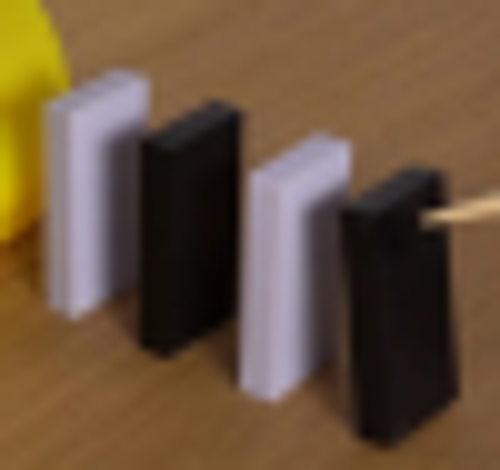
视觉工具实际返回图片 3
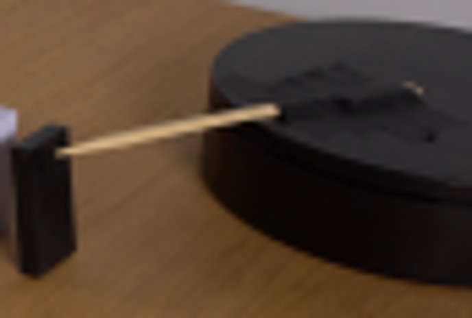
视觉工具实际返回图片 4
视觉工具实际返回图片 5
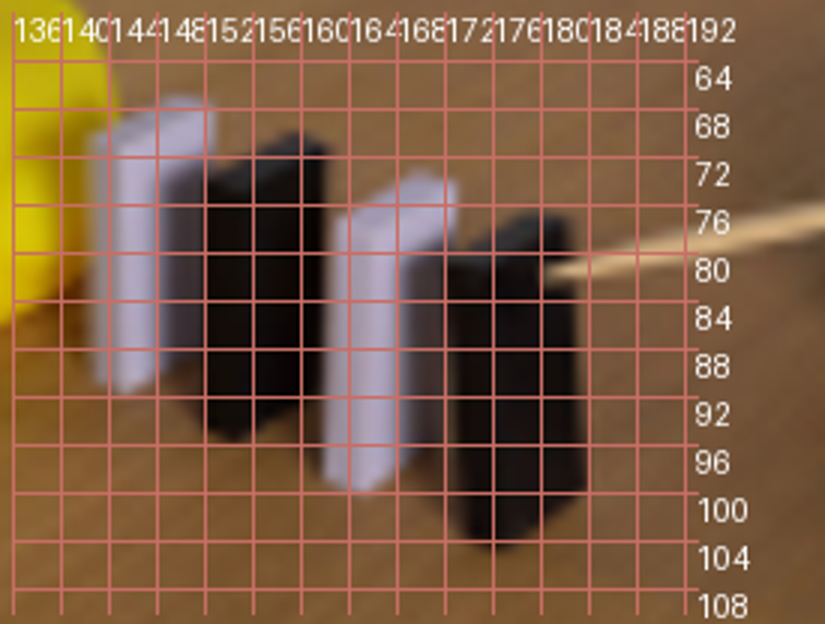
视觉工具实际返回图片 6
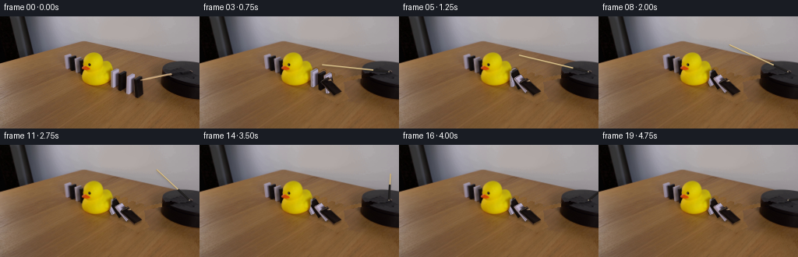
视觉工具实际返回图片 7
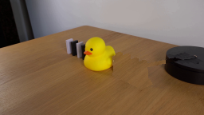
视觉工具实际返回图片 8
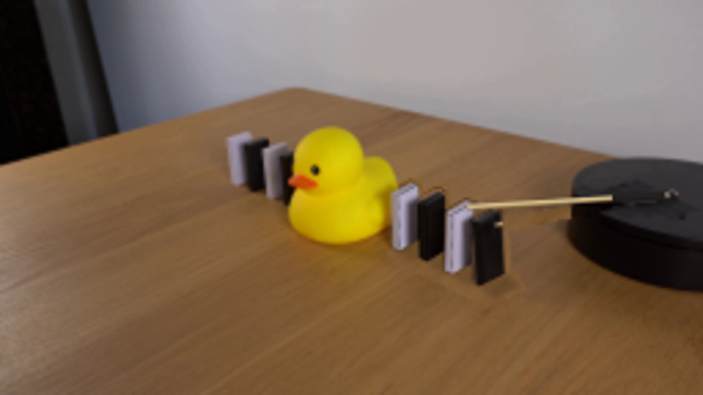
视觉工具实际返回图片 9
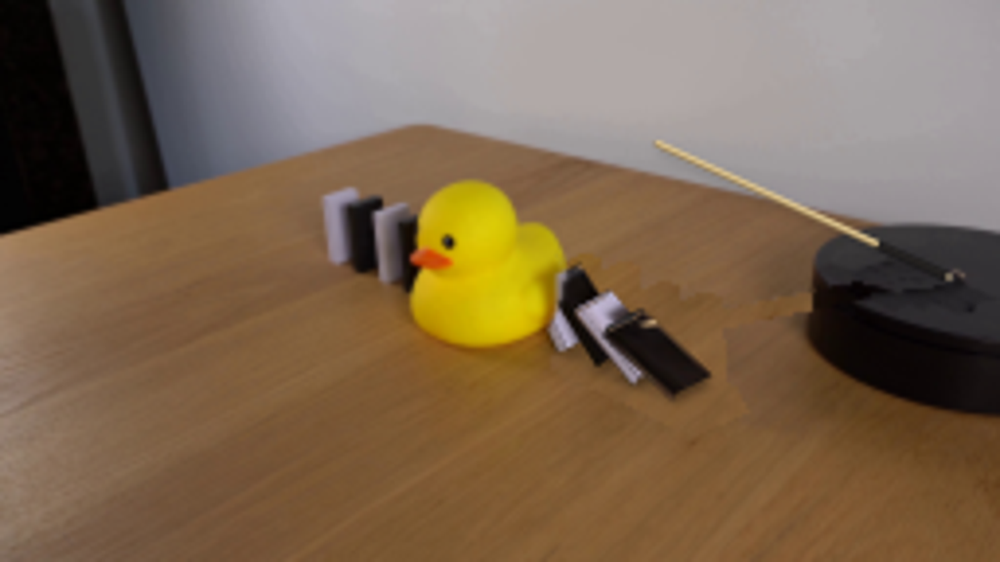
视觉工具实际返回图片 10
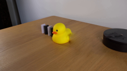
视觉工具实际返回图片 11
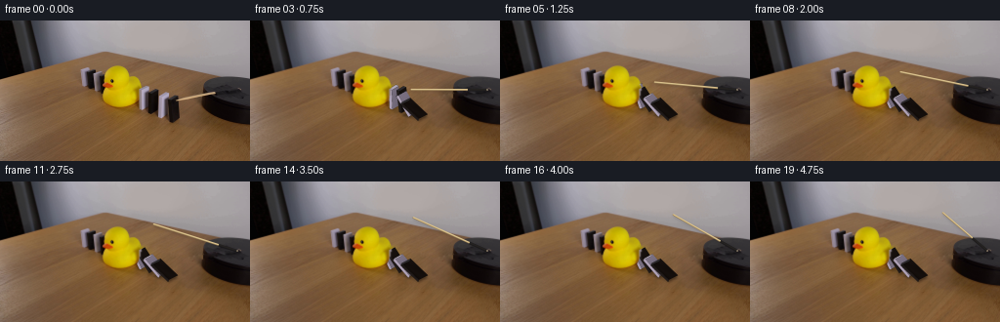
保存候选 6 份；完成命令 15 次；可验证图片返回 11 张。原始 API 响应与完整日志保留在本地。